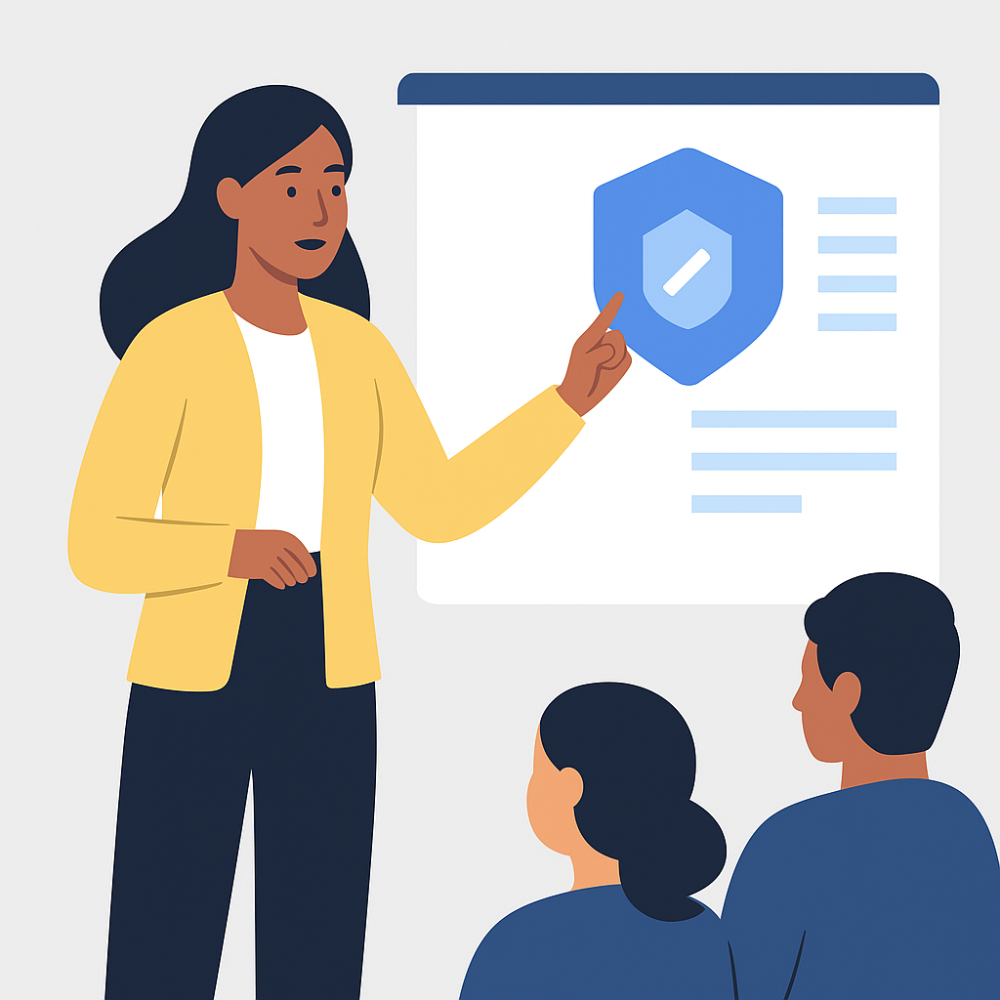
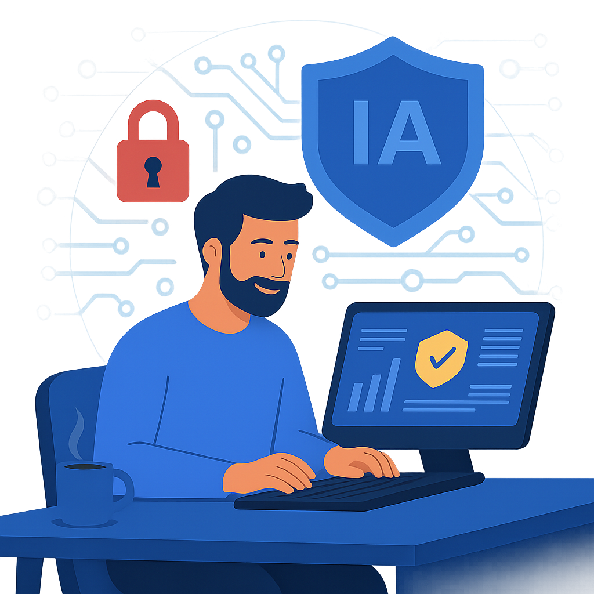

¿Quiénes somos?
CibersegurIA es un proyecto independiente de divulgación crítica sobre los retos legales, técnicos y éticos que plantea la inteligencia artificial. Nuestra misión es acercar el cumplimiento normativo y la ciberseguridad a las personas responsables de proteger los sistemas en el sector público y privado.
Charlas de concienciación a usuarios sobre sistemas de IA
Diseñamos sesiones ágiles, interactivas y alineadas con el Esquema Nacional de Seguridad para preparar a tus equipos frente a riesgos reales en entornos digitales con IA. Porque la seguridad no empieza con tecnología, empieza con formación.
“Anexo II del ENS (Real Decreto 311/2022): el personal debe ser concienciado y formado regularmente en seguridad de la información (5.2.3 y 5.2.4).”

✔ Gratuito para administraciones públicas y entidades del tercer sector
💼 A bajo coste para empresas privadas
Artículos de opinión / Guías cibersegurIA
Escribimos en Substack sobre seguridad digital, cumplimiento, derechos y actualidad relevante en legislación IA en Europa. Puedes leer todas las publicaciones en:
 Ir al blog